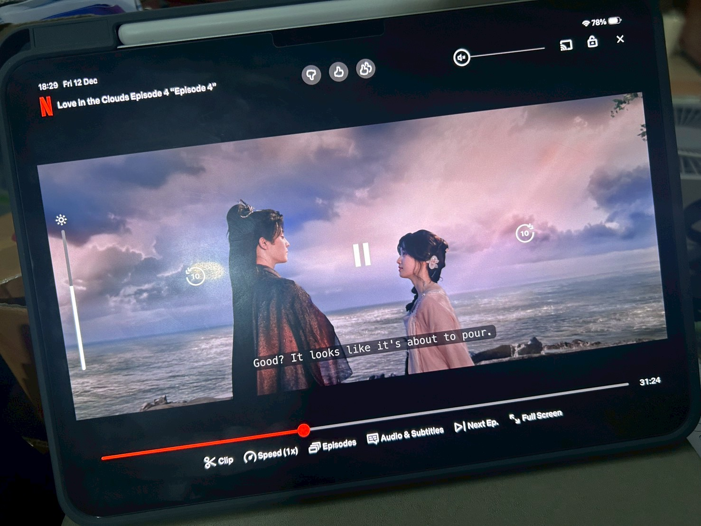

I absolutely love watching series because it's my perfect strategy for unwinding and genuinely stepping away from the daily stress and pressures that build up. While I'm open to dramas from all over East Asia—I definitely enjoy shows from Thailand, Korea, Taiwan, and Japan—I've recently become completely hooked on Chinese dramas. They offer this wonderful, comforting escape thanks to their deeply rich storylines, significant emotional resonance, and that distinct cultural atmosphere which is just so captivating. It's truly a reliable way for me to relax and feel recharged after a particularly demanding or busy day.

What makes me into watching series
My interest in watching series began casually, evolving from watching regular TV dramas to occasionally browsing shows on Netflix without much commitment. Everything changed, however, in early high school when I discovered a Chinese costume drama; its compelling historical setting, plot, and charismatic cast instantly captivated me and sparked a genuine passion for the genre. Since then, I’ve steadily followed my favorite actors and accumulated a long list of adored Chinese dramas, making it my ultimate go-to activity—it’s not just passing the time, but my personal, happy way to truly relax and recharge whenever I have free time.
✧ Apps recommended to watch series
| Apps | My opinion |
|---|---|
| Netflix | The app that I am sure most of the people has it. Netflix has a lot of series, drama, and other contents |
| iQIYI | a chinese app that doesnt only have chinese contents but also have some Thai series |
| WeTV | another chinese app that also has many Thai contents |
| Youku | a Chinese app that has mainly chinese contents but there are so many interesting c-dramas |
| YouTube | The app that you can watch many contents not just series |
| bilibili | An app for watching chinese contents that is similar to youtube |
The C-drama I want to recommend
✧ These are some of the C-drama that I have watch recently and sincerely want to recommend.
Note: You can click on the picture to go to each series.